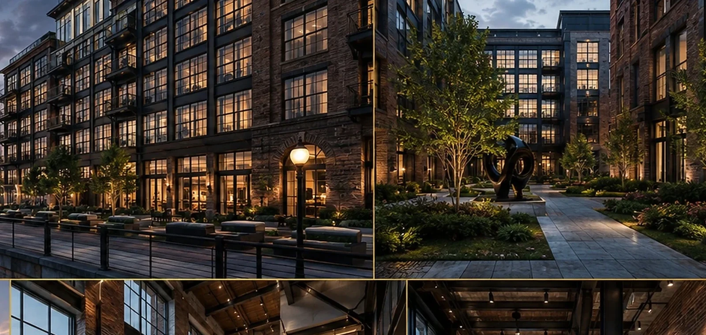
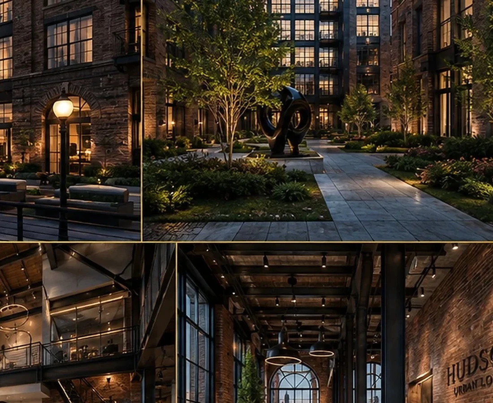
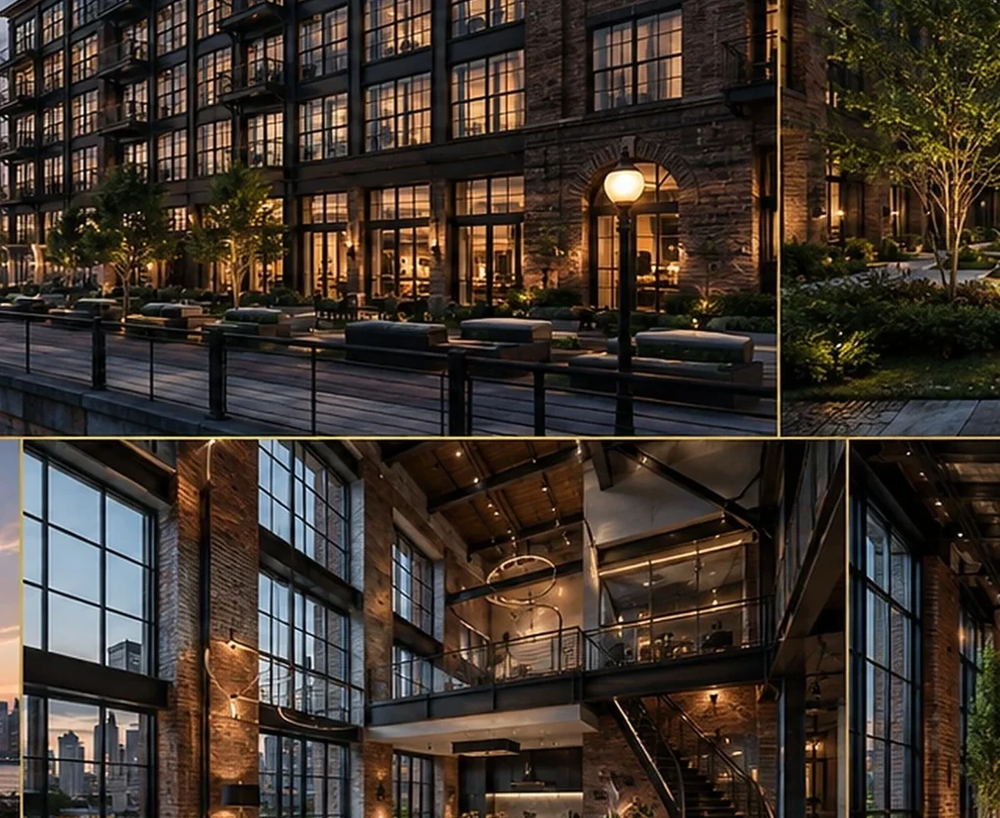

READ THE PROJECT AS A SEQUENCE OF DEVELOPMENT DECISIONS.
The fields below form BADR's standard case-study lens. Project-specific commercial claims should be replaced only when they are supported by the project record.
THE DEVELOPMENT QUESTION
How can compact urban housing feel robust enough for the city and warm enough for daily life?
THE GOVERNING IDEA
Balance urban presence with residential legibility.
THE DESIGN RESPONSE
Rhythm, transparency and active ground-level relationships create a stronger connection to the street.
THE SIGNATURE
A strong street edge with large openings and contemporary material rhythm.
WHY IT MATTERS
The project gains market identity through clarity and urban fit rather than visual noise.
Design Direction
A project identity shaped by place, typology and experience.
The architecture balances urban robustness with residential warmth, using rhythm, transparency and active ground-level relationships to support city life.
Project narrative is based on the supplied BADR portfolio record and visible design material.



A New Development Opportunity
Your Site Deserves a Development Strategy Before It Becomes a Drawing Package.